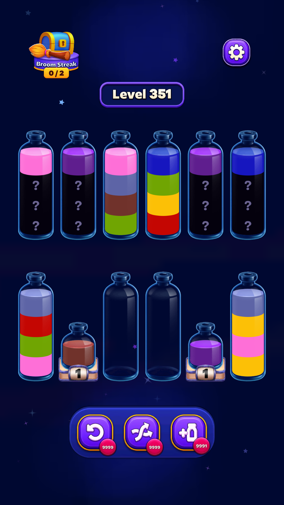
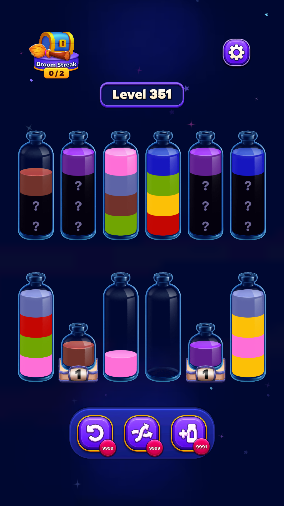

MagicSort — Từ một nước đổ đến một lần cứu ván: cơ chế, ví dụ và casebook
Mục lục bài phân tích
- 1. Walkthrough thật: level 351, bốn thao tác tạo bốn loại kết quả
- 2. Mô hình chính xác của một nước đổ
- 3. Vật cản thay đổi bài toán theo bốn cách
- 4. Daily: cùng lõi sorting nhưng khác điều kiện thua và nhịp quyết định
- 5. Level và DLB: tách số level, lớp khó và seed đang chơi
- 6. Casebook gameplay có thể giao cho QA / designer
- 7. Đánh giá dành cho thiết kế và telemetry
- Nguồn và giới hạn kiểm chứng
Phạm vi: app 0.0.3129 trên LDPlayer; bằng chứng thao tác ngày 10/10/2026; thuật toán đọc trực tiếp từ pseudo-C của 0.0.3063. Bài được viết theo cấu trúc walkthrough, ảnh theo bước, nhánh ngoại lệ và số liệu của báo cáo RoyalMatch; không xem tên method trong stub là bằng chứng về thân hàm.
Kết luận thiết kế: tài nguyên quyết định khả năng giải không chỉ là số chai trống. Người chơi còn quản lý khả năng tiếp cận màu, thông tin đang bị che và các chai chưa được phép dùng. Undo trong lần thử đã phục hồi nước nhưng giữ màu vừa khám phá; vì thế nó có giá trị thông tin. Daily bổ sung áp lực thời gian vào cùng bài toán, còn Regular tạo áp lực bằng thế kẹt, booster và hậu quả mất chuỗi.
Các nhãn dùng trong bài: OBSERVED = đã xảy ra trong phiên LDPlayer có ảnh/log; STATIC = được hỗ trợ bởi cấu hình hoặc thân pseudo-C; PROPOSED = ví dụ/tiêu chí kiểm thử chưa thực thi. Ví dụ chai bằng chữ là mô hình giải thích, không phải ảnh hoặc seed đã chạy.
1. Walkthrough thật: level 351, bốn thao tác tạo bốn loại kết quả
Đánh số chai theo từng hàng, từ trái sang phải; hai chai nhỏ cũng là chai. Bàn đầu có 12 chai, gồm hai chai lớn trống và hai chai nhỏ có khóa số 1. Các số booster rất cao do tài khoản đã được chỉnh trước phiên; phiên test này không sửa save hay layout. Vì vậy dùng kết quả để xác minh quy tắc thao tác, không suy ra trải nghiệm kinh tế của người mới.
| Bước | Thao tác | Thay đổi bàn / thông tin | Thay đổi kho | Điều rút ra |
|---|---|---|---|---|
| 0 | Vào 351 | Chai đầu trên cùng hồng; ba lớp dưới bị che | Undo 9.999; Shuffle 9.999; Extra Bottle 9.991 | Có khác biệt giữa màu thật và thông tin được nhìn thấy |
| 1 | Chai 1 → chai 2 đầu tím | Không có nước chuyển | Không đổi | Luật cùng màu áp trước thao tác đổ |
| 2 | Chai 1 → chai trống hàng dưới | Hồng sang đích; nâu được lộ ở nguồn | Không đổi | Một nước đi vừa di chuyển vật chất vừa tiết lộ thông tin |
| 3 | Undo | Hồng trở lại nguồn, đích trống; nâu vẫn nhìn thấy | Undo 9.999 → 9.998 | Phục hồi trạng thái nước không có nghĩa xóa trí nhớ hình ảnh |
| 4 | Extra Bottle | Tổng 12 → 13 chai; hàng dưới bố trí lại | Extra Bottle 9.991 → 9.990 | Booster mở dung tích sử dụng và thay đổi tọa độ hit target |






Ý nghĩa UX: cùng một nút Undo đang giải quyết hai nhu cầu: sửa nước đi xấu và mua cơ hội thăm dò. Trong bàn dấu hỏi, người chơi có thể chấp nhận đổ thử, đọc màu, rồi hoàn tác. Đây là phân tích từ cặp ảnh trước/sau, chưa phải kết luận rằng mọi blocker hoặc mọi phiên bản đều giữ thông tin sau Undo.
Phiên bổ sung có walkthrough riêng về chọn/hủy Shuffle, Shuffle thành công, Undo không tác động ngay sau Shuffle và Undo một nước đổ mới: xem ảnh demo và case theo từng bước. Layout trong phiên bổ sung khác phiên ở bảng trên; không ghép hai phiên thành một bàn liên tục.
2. Mô hình chính xác của một nước đổ
Ký hiệu [Đỏ, Xanh, Xanh] đọc từ đáy lên miệng. H là dung tích; E = H − số ô đang chứa. Với nước thường, trước hết phải qua điều kiện chọn nguồn, điều kiện chọn đích, blocker và animation. Sau đó mới tính lượng chuyển. Trong SelectionResult.GetSelectionResult (RVA 0xE3E338), pseudo-C lấy số ô khả dụng ở đoạn màu trên cùng, dừng khi gặp điều kiện blocker, rồi kẹp với GetEmptyCellCount của đích.
Mô hình rút gọn cho chai thường không có Rainbow: q = min(T, Eđích), với T là số ô cùng màu ở đỉnh có thể lấy ra. Không dùng toàn bộ số ô cùng màu trong chai: màu bị chôn dưới một màu khác không thuộc T.
| Nguồn, đích trước | Vì sao được / không được | Sau khi animation kết thúc | Bảo toàn |
|---|---|---|---|
| H=4; A=[Đỏ,Xanh,Xanh], B=[Vàng,Xanh] | T=2, E=2; đỉnh trùng Xanh | A=[Đỏ], B=[Vàng,Xanh,Xanh,Xanh] | Hai ô Xanh chuyển; tổng nước vẫn 5 |
| H=4; A=[Đỏ,Xanh,Xanh], B=[Vàng,Vàng,Xanh] | T=2 nhưng E=1 | A=[Đỏ,Xanh], B=[Vàng,Vàng,Xanh,Xanh] | Chỉ 1 ô được chuyển; nguồn không rỗng |
| H=4; A=[Đỏ,Xanh], B=[] | Đích rỗng; T=1 | A=[Đỏ], B=[Xanh] | Không được kéo luôn Đỏ theo Xanh |
| H=4; A=[Đỏ,Xanh], B=[Vàng] | Đỉnh khác màu | A và B giữ nguyên | Không phát sinh/trừ booster hoặc nước |
| H=4; A=[Đỏ,Xanh], B=[Xanh,Xanh,Xanh,Xanh] | E=0 | Không đổ | Cùng màu chưa đủ; phải còn chỗ và đích còn được phép chọn |
Các ví dụ trên là STATIC + PROPOSED fixture, chưa được dựng trong app. Rainbow có nhánh màu riêng ngay trong SelectionResult; không áp quy tắc rút gọn này cho Rainbow. Chai hoàn thành, chai đang animation và chai bị khóa cũng cần kiểm tra trạng thái trước, dù nhìn bằng mắt thấy có dung tích.
2.1. Tại sao tổng ô trống chưa nói hết độ khó?
Giả sử A=[Đỏ,Xanh], B=[Xanh,Đỏ], C=[] với H=2. Có 2 ô trống và người chơi có thể dùng C để tách màu. Nếu hai ô trống nằm rải trong hai chai mà đỉnh đều khác màu cần chuyển, tổng dung tích trống bằng nhau nhưng nước đi có thể khác hẳn. Nếu C bị khóa, dung tích hình học không còn là dung tích sử dụng. Vì vậy báo cáo độ khó nên ghi đồng thời số chai trống có thể chọn, số nước đi hợp lệ, độ sâu màu bị chôn và số điều kiện mở khóa chưa đạt.
Tương tự, thêm một chai không phải “+1 lượt”. Nó tạo một vùng đệm dùng nhiều lần, cho phép thay đổi thứ tự xử lý màu. Định lượng giá trị nên đo mức tăng tỷ lệ giải sau khi thêm chai trên cùng seed, không lấy số animation làm thước đo.
2.2. Hoàn thành chai và hoàn thành level là hai mốc riêng
Hồ sơ BottleItem.ShouldComplete có các nhánh dựa trên trạng thái hoàn thành và lượng màu còn lại; không đơn giản hóa mọi chai thành “đủ H ô cùng màu”. Một chai đặc biệt có thể không được hoàn thành theo luật của chai thường. LevelWinOrStuckSystem đợi bàn dừng rồi xét collection; bàn nhiều collection cần chuyển đợt trước khi thắng toàn level. Hệ thống còn có TrySolveSpecialStuck: không nên suy ra “người chơi chưa nhìn thấy nước đi” đồng nghĩa popup thua phải xuất hiện ngay.
3. Vật cản thay đổi bài toán theo bốn cách
| Nhóm quyết định | Ví dụ có trong model / code | Người chơi phải suy nghĩ gì? | Cần ghi gì khi đánh giá level? |
|---|---|---|---|
| Che thông tin | Question Mark | Có nên dùng một ô trống để khám phá màu chưa biết? | Tỷ lệ ô che, màu vừa lộ, Undo sau reveal |
| Khóa khả năng thao tác | Curtain, Woodbox, khóa/chìa | Phải hoàn thành mục tiêu nào trước để mở chai? | Chai bị khóa, mục tiêu phụ thuộc, đường mở khóa |
| Ràng buộc màu / lớp | Tag, Clay, Ice, Plaster, MagicSeal | Một cặp cùng màu có bị quy tắc khác chặn? | Blocker trên ô/chai, lý do từ chối nguồn/đích |
| Thay đổi trạng thái bàn | Generator, Toggle, Rainbow, Firework, ChargeableBottle | Sau đổ còn hiệu ứng nào có thể mở nước đi mới? | Bàn đã ổn định chưa; tác động tự động; lịch sử hoàn tác |
Đây là nhóm phân tích, không thay thế enum ItemType hoặc xác nhận tất cả đã xuất hiện tự nhiên trên tài khoản. Các tham số phá Ivy/Frog/Icicle chưa được chứng minh đủ để công bố công thức số lượt. Bản GDD đúng phải để khoảng trống đó rõ ràng, thay vì suy tên animation thành luật.
Ví dụ phụ thuộc mở khóa — PROPOSED: rèm che chai C, mục tiêu là hoàn thành chai màu Vàng. A chứa Vàng dưới Xanh; B là vùng đệm. Người chơi phải đưa Xanh ra B, gom Vàng vào D, đợi D hoàn thành và rèm gỡ xong mới dùng C. Một bước gom Xanh “đẹp mắt” nhưng lấp kín B có thể trì hoãn đường mở khóa. Đây là lý do obstacle làm đổi thứ tự ưu tiên, chứ không chỉ tăng số thao tác.
4. Daily: cùng lõi sorting nhưng khác điều kiện thua và nhịp quyết định
Phiên tutorial Daily dùng 4 chai đầy cao 12 ô và 3 chai trống; thời lượng cấu hình 180 giây. Ảnh lúc bắt đầu còn 02:58. Sau khi để hết giờ, popup hiện Out of Time / Play On 900 / Give Up. Nhấn Play On đưa timer về khoảng 00:59 và cache coin giảm đúng 900. Ảnh MS-18/19/20 chỉ là countdown trung gian; không dùng chúng để chứng minh timeout.

Lượt thắng tiếp theo dùng chuỗi 53 nước đổ hợp lệ từ seed tutorial, không booster; đây không phải chứng minh lời giải ngắn nhất. Không ghép timer còn 00:59 của lần mua thêm giờ với timer của lượt giải thành một dòng thời gian liên tục. Kết quả xác minh được là: có một lần mua thêm 60 giây; ở lượt giải thành công Daily trả  10 coin; lịch tăng 0 → 1 và level Regular vẫn 351.
10 coin; lịch tăng 0 → 1 và level Regular vẫn 351.
Phân tích nhịp chơi: 180/53 ≈ 3,40 giây mỗi nước nếu cả ván chỉ dùng đúng 53 nước; đó là ngân sách gộp cho suy nghĩ, hai lần tap, animation và sửa sai, không phải thời gian suy nghĩ thực đo. Với 105 giây ngân sách này còn 1,98 giây. Không dùng phép chia đó để kết luận một Daily thường khó hơn tutorial, vì layout/độ sâu màu/độ dài lời giải cũng khác.
5. Level và DLB: tách số level, lớp khó và seed đang chơi
Snapshot 10/10 có 999 entry regular và 500 loop. Trong 999 regular có 801 Regular, 99 Hard, 99 SuperHard theo hai cờ isHard/isSuperHard; difficulty=0 ở mọi entry không có nghĩa mọi màn cùng độ khó. Level 351 có 5 seed v4blockerprod...351_difficulty1-*, không có dlbSeeds trong entry hiện tại. Đừng viết “thua đủ số lần bất kỳ màn nào cũng được DLB cứu”.
| Level có DLB trong snapshot | Cap | Số seed DLB | Ý nghĩa chắc chắn |
|---|---|---|---|
| 39 | 7 | 3 | Có ngưỡng đổi sang một tập seed khác |
| 59 | 11 | 3 | Có thể đổi nhịp trợ giúp khác level 39 |
| 69 | 6 | 3 | Ngưỡng cấu hình thấp hơn 59 |
| 79 | 10 | 3 | Không phải quy tắc cap chung toàn game |
| 89 | 7 | 3 | Cùng cap chưa chứng minh cùng độ khó thực |
| 99 | 18 | 3 | Chờ lâu hơn theo chỉ số retry hiệu dụng |
| 129 | 11 | 3 | Sau 129, snapshot này không có entry DLB khác |
Điểm đọc sâu từ LevelModelService.GetSeedIdFromConfig (RVA 0x19AEA4C): đầu vào chỉ số chọn seed được tính là max(GetRetryCount − GetSnitchRetryCount, 0); có slSeed hợp lệ và Snitch active thì trả seed đó trước. Hết danh sách seed thường hoặc DLB, code tạo bản sao, loại seed vừa chơi, rồi random trong tập còn lại; tập còn lại rỗng thì quay về tập gốc. Đây là thuật toán của bản 0.0.3063, chưa được đo ranh giới trên 0.0.3129.
Ví dụ STATIC với entry level 39: retry hiệu dụng 6 chưa chạm cap 7; tại 7, chỉ số DLB bắt đầu 0; tại 8 là 1; tại 9 là 2; sau đó vào nhánh chọn lại. Không dịch trực tiếp thành “lần chơi thứ 8” trước khi xác nhận bộ đếm tăng tại thời điểm nào trong bản cài. Tên seed chuyển từ difficulty5 sang difficulty2/1 hỗ trợ ý định giảm khó, nhưng chưa chứng minh tỷ lệ thắng tăng bao nhiêu.
6. Casebook gameplay có thể giao cho QA / designer
MS-G01 — Sai màu không tạo tác động phụ · OBSERVED
Tiền điều kiện: level 351, chai 1 hồng, chai 2 tím, bàn dừng. Bước: tap chai 1 rồi chai 2; chờ phản hồi. Kết quả đã thấy: bố cục giữ nguyên, không trừ booster. Bất biến: số ô mỗi màu và lượng coin không đổi bởi một cặp chọn sai. Bằng chứng: MS-T02; ảnh MS-03-invalid-color.png; actions.jsonl. Mở rộng PROPOSED: lặp 20 lần, tap quá nhanh và tap chai đang animation; chưa có kết quả stress test.
MS-G02 — Chai trống mở thông tin ẩn · OBSERVED
Tiền điều kiện: cùng bàn, đích là chai trống hàng dưới. Bước: chọn chai 1 → đích; đợi nguồn trở về vị trí. Kết quả: hồng sang đích; lớp nâu trước đó che dưới dấu hỏi hiện ra. Bất biến: chỉ đoạn trên cùng chuyển; số màu tổng không đổi. Bằng chứng: MS-T03; ảnh MS-04-valid-pour.png; SelectionResult.GetSelectionResult. Ví dụ sử dụng: người chơi có thể quyết định gom nâu sau khi biết màu mới, thay vì tiếp tục đoán.
MS-G03 — Undo hoàn nước nhưng không che lại màu · OBSERVED
Tiền điều kiện: ngay sau G02; Undo=9.999. Bước: bấm Undo một lần, đợi ổn định. Kết quả: đích rỗng; hồng về nguồn; nâu còn thấy; Undo=9.998. Bất biến: mỗi lần dùng thành công giảm một vật phẩm; thông tin lộ không được mặc định là một phần của rollback. Bằng chứng: MS-T04 và cặp ảnh G02/G03. Ý nghĩa: khi chấm độ khó cần tách attempt có Undo sau reveal khỏi attempt hoàn toàn tự giải.
MS-G04 — Extra Bottle làm thay đổi hit target · OBSERVED
Tiền điều kiện: 12 chai, Extra Bottle=9.991. Bước: dùng Extra Bottle, đợi bàn reflow. Kết quả: 13 chai, kho còn 9.990. Bất biến: không mất nội dung chai cũ; tác vụ tự động phải lấy tọa độ mới sau reflow. Bằng chứng: MS-T05; ảnh MS-06-extra-bottle.png; BottleCollection.AddExtraBottle. Chưa xác minh: giới hạn tổng số chai và hành vi bấm khi chạm trần; không coi một lần thành công là đã phủ điều kiện giới hạn.
MS-G05 — Đổ một phần vì đích thiếu chỗ · STATIC / PROPOSED
Fixture: H=4, A=[Đỏ,Xanh,Xanh], B=[Vàng,Vàng,Xanh], không blocker. Bước: chọn A→B. Kỳ vọng từ code: q=min(2,1)=1; A=[Đỏ,Xanh], B=[Vàng,Vàng,Xanh,Xanh]. Bất biến: không đổ tràn, không ép cả khối 2 ô. Bằng chứng: SelectionResult.c, nhánh kẹp GetEmptyCellCount, RVA 0xE3E338. Trạng thái: chưa dựng fixture trong app; ảnh G02 chỉ minh họa thao tác vào chai trống, không chứng minh case thiếu chỗ này.
MS-G06 — Cùng màu nhưng bị blocker chặn · STATIC / PROPOSED
Fixture: nguồn đầu Xanh; đích đầu Xanh còn chỗ nhưng overlay đang khóa. Bước: thử đổ, hoàn thành mục tiêu mở khóa bằng nước đi khác, đợi animation gỡ blocker, thử lại. Kỳ vọng: lần đầu từ chối; lần sau chỉ cho đổ nếu mọi gate đã thỏa. Bất biến: phép kiểm màu không được bỏ qua quyền chọn của blocker. Bằng chứng: BottleItem.IsSelectableAsTarget, CacheBlockedIndexes, ABlockerItem; gdd/Obstacles.json. Cần ghi: blocker id, mục tiêu, thời điểm xóa logic so với hiệu ứng hình ảnh.
MS-G07 — Cảnh báo Quit có nhiều tầng · OBSERVED
Tiền điều kiện: đang ở Regular 351,  5 life. Bước: Settings→Quit; xác nhận cảnh báo mạng; xác nhận cảnh báo rank tiếp theo. Kết quả: life cảnh báo trước, Master League rank sau; Failed rồi về Home 4 life. Bất biến: chuỗi popup không được trừ life nhiều lần cho một lần quit. Bằng chứng: MS-T06/07/08, ảnh
5 life. Bước: Settings→Quit; xác nhận cảnh báo mạng; xác nhận cảnh báo rank tiếp theo. Kết quả: life cảnh báo trước, Master League rank sau; Failed rồi về Home 4 life. Bất biến: chuỗi popup không được trừ life nhiều lần cho một lần quit. Bằng chứng: MS-T06/07/08, ảnh MS-09-quit-life.png, MS-10-quit-followup.png, MS-11-failed.png. Giới hạn: không có dữ liệu đủ để kết luận rank thực tế giảm bao nhiêu; ảnh chỉ chứng minh cảnh báo.
MS-G08 — Daily timeout và mua 60 giây · OBSERVED
Tiền điều kiện: tutorial Daily, timer đã về 0, coin đủ 900. Bước: chụp Out of Time; bấm Play On; chụp timer và đọc cache sau thao tác. Kết quả: timer khoảng 00:59; coin 999.996.759→999.995.859. Bất biến: cộng giờ không xáo bàn; số dư giảm đúng một giao dịch. Bằng chứng: MS-T14/15; ảnh MS-21-current.png, MS-22-daily-playon.png; after_playon/summary.json. Chưa chạy: coin=899, coin=900, double-tap và app bị kill trong lúc mua.
MS-G09 — Daily thắng không tăng Regular · OBSERVED
Tiền điều kiện: lượt Daily được giải bằng 53 nước hợp lệ, không booster. Bước: hoàn thành màu; Continue; đợi calendar settle. Kết quả: reward 10 coin; ngày 10 hoàn thành; lịch 0→1; Regular vẫn 351; ngày 11 khóa. Bất biến: không cộng nhầm tiến độ Regular hoặc 20 coin Regular. Bằng chứng: MS-T16–18; MS-solve-53.png, MS-29-win-result.png, MS-31-calendar-settled.png; before/after cache. Giới hạn: đây là một ngày/tutorial; chưa phủ đổi tháng và replay ngày đã xong.
MS-G10 — Ranh giới DLB phải tính retry hiệu dụng · STATIC / PROPOSED
Fixture: entry 39; Snitch không active, không slSeed được chọn; dlbCap=7. Bước: giữ cùng config, thử ba trạng thái retry hiệu dụng 6/7/8; ghi selected seed. Kỳ vọng: 6 còn tập thường; 7/8 chọn DLB[0]/DLB[1]. Bất biến: lấy max(retry−snitchRetry,0); không lấy retry thô. Bằng chứng: LevelModelService.GetSeedIdFromConfig và IPlayerService.cs, runtime levelsConfig.levelConfigModels[38]. Trạng thái: chưa chạy boundary test; ứng dụng 3129 có thể thay đổi thuật toán.
MS-G11 — Vượt số seed không lặp ngay seed cũ nếu còn lựa chọn · STATIC / PROPOSED
Fixture: seeds=[A,B,C], chỉ số hiệu dụng vượt danh sách, lastSelectedSeed=B. Bước: gọi đường chọn lại; ghi tập ứng viên và seed kết quả. Kỳ vọng code 3063: copy danh sách, remove B, random A/C. Nếu chỉ có [B], loại xong rỗng thì dùng lại tập gốc. Bất biến: không sửa danh sách config gốc; không chia modulo cho tập rỗng sau khi đã có fallback. Bằng chứng: thân pseudo-C GetSeedIdFromConfig, các lời gọi List constructor/Remove/Random.Range. Ý nghĩa: giảm cảm giác chơi lại y nguyên, không chứng minh công bằng xác suất mọi kích thước tập.
MS-G12 — Cạnh tranh thắng và hết giờ · PROPOSED
Fixture: Daily còn <1 giây, nước cuối đã được chọn nhưng animation chưa xong. Bước: thực hiện nước cuối, ghi video/frame, timer, LevelEndType và reward. Kỳ vọng cần chốt bằng test: chỉ một kết cục được commit; không đồng thời mở Perfect và Out of Time, không trừ Play On sau win. Bất biến: một attempt có một terminal outcome và một lần reward. Bằng chứng định vị: LevelWinOrStuckSystem.CheckAndApplyTimeIsUp, IsBoardStopped, CheckAndApplyLevelWinOrHasNoMove. Không khẳng định: thứ tự ưu tiên chính xác của hai điều kiện ở bản 3129 chưa được thực thi.
7. Đánh giá dành cho thiết kế và telemetry
1. Đo “khó” ở nơi người chơi ra quyết định. Các metric hữu ích là thời gian tới nước hợp lệ đầu tiên, số chọn sai màu, số lần reveal rồi Undo, số chai trống có thể dùng lúc mắc kẹt. Chỉ đếm số chai/ô che không đo được dependency của blocker. 2. Gắn hỗ trợ vào attempt. Extra Bottle làm đổi không gian trạng thái; DLB làm đổi seed; Magic Bottle/Snitch có thể đổi đầu vào. So tỷ lệ thắng theo số level mà thiếu những nhãn này sẽ trộn các bài toán khác nhau. 3. Đánh giá thất bại Daily riêng. Timeout khi còn một màu khác với kẹt không có nước đi. Lưu stuck_reason, phần trăm màu hoàn thành, số nước còn khả dụng, timer trước mua thêm giờ và số Play On. 4. Giữ ba lớp trạng thái trong GDD: dữ liệu nước; thông tin người chơi đã biết; presentation/animation. Case Undo chứng minh ba lớp này không nhất thiết rollback đồng bộ.
Nguồn và giới hạn kiểm chứng
facts/report_20261010/test_results.json: MS-T01–18;facts/runtime/test_20261010/actions.jsonl; các ảnh trongscreens/test_20261010/.facts/runtime/test_20261010/before/GrandCachedRemoteConfigs: mapping level, DLB;before/CachedRemoteConfigs: các gate đang cache.- Job decompile
com.grandgames.magicsort_Unity_20260909_112501:RecoveredNative/PseudoC/Assembly-CSharp/Modules/Contexts/GamePlay/Systems/Scripts/InputSystemNS/SelectionResult.c;Levels/Scripts/LevelModelService/LevelModelService.c;UnityExport/.../Application/Player/Scripts/IPlayerService.cs. - Hồ sơ Bottle Sort, vật cản, Level Generation, kiểm thử LDPlayer. Chi tiết chưa có ảnh/run được giữ nhãn STATIC/PROPOSED; không tính thêm vào số case đã thực thi.